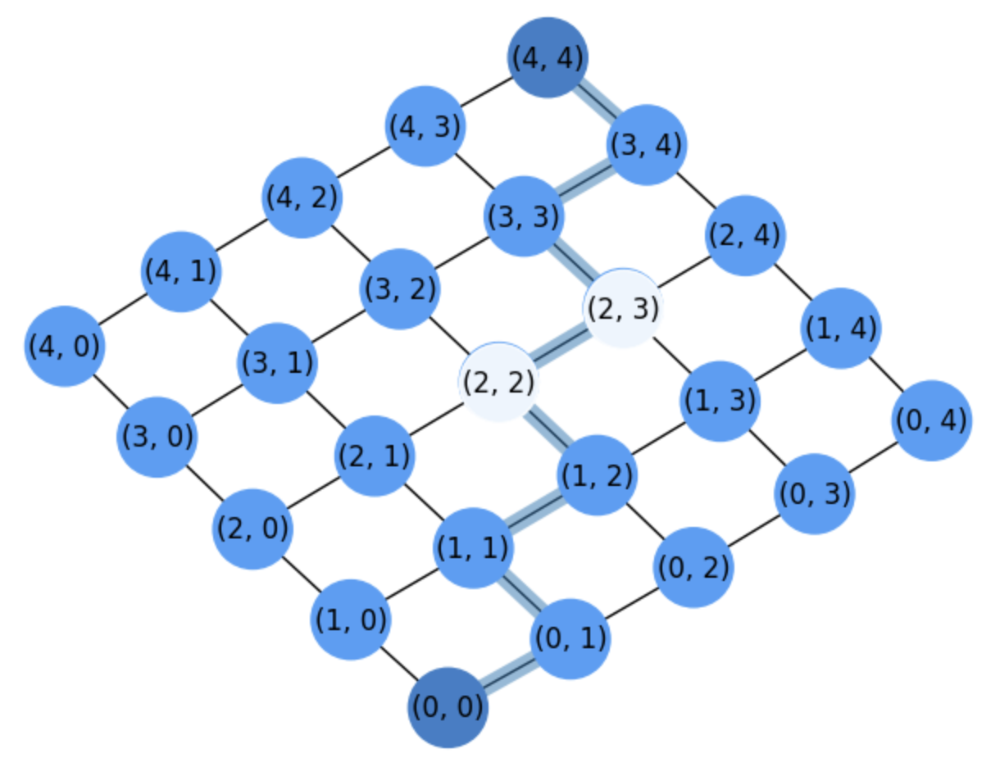
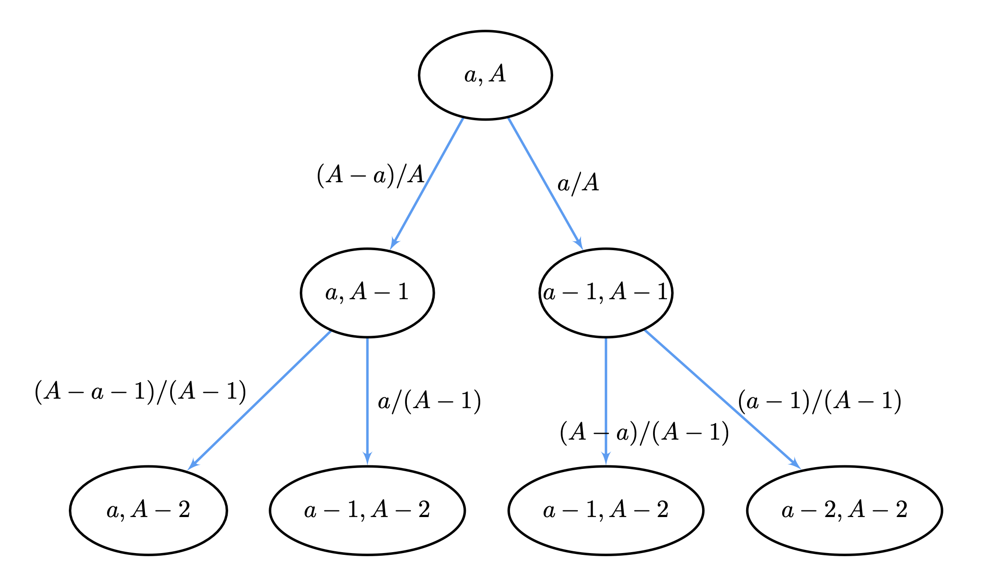

21. Test Combinatorics and Probability 04/26#
21.1. Combinatorics#
Exercise 1. How many bit strings of length 4 contain:
a). At least two 1s?:
b). Exactly three 1s?:
c). At most two ones?:
d). An equal number of 0s and 1s?:
General answer. For this exercise consider that we have \(2^n\) different strings where \(n=5\). In addition, as order is not required we have combinations. Therefore, we use we expression:
\(
{5\choose 0} + {5\choose 1} + {5\choose 2} + {5\choose 3} + {5\choose 4} + {5\choose 5} = 2^5\;.
\)
a). At least two 1s?: (all minus those with less than 2 ones)
\(
\begin{align}
\textbf{Sol}_a &= 2^5 -\left({5\choose 0} + {5\choose 1}\right)\\
&= 2^5 - \left(1 + \frac{5!}{4!1!}\right)\\
&= 2^5 - \left(1 + \frac{5\cdot 4!}{4!1!}\right)\\
&= 2^5 - \left(1 + 5\right)\\
&= 2^5 - \left(6\right)\\
&= \mathbf{26}\\
\end{align}
\)
b). Exactly three 1s?:
\(
\begin{align}
\textbf{Sol}_b = {5\choose 3} = \frac{5!}{3!2!} = \frac{5\cdot 4\cdot 3!}{3!2!} = \mathbf{10}\\
\end{align}
\)
c). At most two ones?: (0, 1 or 2 ones)
\(
\begin{align}
\textbf{Sol}_c &= {5\choose 0} + {5\choose 1} + {5\choose 2}= 1 + 5 + 10 = \mathbf{16}
\end{align}
\)
d). An equal number of 0s and 1s?: None \(\mathbf{0}\)
21.2. Pascal’s Triangle#
Given that the root \(n=0\) is \({0\choose 0}=1\), the following leven \(n=1\) is \({1\choose 0}\; {1\choose 0}=1\), we have that the \(n-\)th level is given by
\(
{n\choose 0}=1\; {n\choose 1}=n\;\ldots\; {n\choose n-1}=n\; {n\choose n}=1
\)
Therefore, the solution is a) \(n=10\) since the second element gives you the level.
21.3. Gaussian variables#
Given a random variable \(X\sim N(1,2.5^2)\) where \(\sigma = 2.5\), compute \(p(X\le 2)\). We have
\(
Z = \frac{X-\mu}{\sigma} = \frac{2-1}{2.5} = \frac{1}{2.5}=0.4\;\Rightarrow\; p(X\le 2)=p(z\le 0.4)=0.6554.
\)
21.4. Counting paths (PEI)#
Given the figure{kind=link}

Fig. 21.1 Grid for counting paths between \((0,0)\) and \((4,4)\) after marking nodes \((2,2)\) and \((2,3)\) as forbidden or obstacles.#
How many different paths between \((0,0)\) to \((4,4)\) DO NOT PASS through \((2,3)\).
\(\textbf{Sol}\): In this case, we have a simple application of the PEI. The total paths going from \((0,0)\) to \((4,4)\) are:
\(
N_{44} = {4+4\choose 4} = 70\;.
\)
The paths going from \((0,0)\) to \((2,3)\) and then going to \((4,4)\) are:
\(
\#P = \underbrace{N_{23}}_{\text{from}\;(0,0)\text{to}\;(2,3)}\cdot\underbrace{N_{(4-2)(4-3)}}_{\text{from}\; (2,3)\;\text{to}\;(4,4)} = N_{23}\cdot N_{21} = {5\choose 2}{3\choose 1} = \mathbf{30}\;.
\)
Therefore
\(
\textbf{Sol} = N_{44} - \#P = 70 - 30 = 40.
\)
is the solution.
21.5. Permutations and Sum principle#
Each user in a computer has a password, which is six to eight characters (0-9) long. How many passwords are there?
Herein, we apply the sum principle since we may have 6, 7 or 8 lengths and each length is disjoint. Therefore, we hae \(P_6 + P_7 + P_8\) (we do not count repetitions here) where
\(
\mathbf{Sol}= P_6 + P_7 + P_8 = 10^6 + 10^7 + 10^8 = 1O^6(10 + 10^2) = 10^6\cdot 110 = \mathbf{110}\;\textbf{M}\;.
\)
21.6. Multichoose#
How many ways are there to select five bills from a cash box containing $1 bills, $5
bills, $10 bills, $50 bills and $100 bills? Assume that the order in which the bills are
chosen does not matter, that the bills of each denomination are indistinguishable and that there
are at least five bills of each type.
Solution. This is a problem of multi-choosing. We have \(5\) types of objects and there are at least \(5\) bills of each type. However we have to select only 5 bills of each type, so we can assume that we have no constraints:
\(
S = \{\infty\cdot \$1,\; \infty\cdot \$5,\; \infty\cdot \$10,\;\infty\cdot \$50,\; \infty\cdot \$100\}
\)
Then we have to solve the following integer equation:
\(
x_1 + x_2 + x_3 + x_4 + x_5 = 5\;\Rightarrow \left(\!\!{m=5\choose k=5}\!\!\right) = {5+5-1\choose 5} = {9\choose 5} = \mathbf{126}\;.
\)
21.7. Conditional probability#
The above tree corresponds to a conditional tree where each level 0, 1, and 2 corresponds to the random variables
\(𝑍_0=𝑋_0\), \(𝑍_1=(𝑋_1|𝑋_0)\) and \(𝑍_2=(𝑋2|𝑋1,𝑋0)\).
The content of each node means the value of the variable at that level. For instance \(𝑋_0=\frac{𝑎}{𝐴}\)
and the node \((𝑎−1,𝐴−2)\)
in level 2 corresponds to
\(𝑍_2=\left(\frac{𝑎−1}{𝐴−2}|𝑍_1=\frac{𝑎}{𝐴−1}\right)\).
The numbers on the edges are the conditional probabilities of reaching a node given its parent in
the tree. For instance, \(𝑝(𝑍_2=\frac{𝑎−1}{𝐴−2}|𝑍_1=\frac{𝑎}{𝐴−1})=\frac{𝑎}{𝐴−1}\).
What is \(𝑝(𝑍_2=\frac{𝑎-1}{𝐴−2}|𝑍_1,𝑍_0)\)
i.e. with respect to the zero level if \(a = 10\) and \(A = 20\)?
{kind=link}

Fig. 21.2 General tree diagram for a card deck (no replacement).#
For \(a=10\), \(A=20\) we have the root \(a/A =1/2\). Then
\(
𝑝\left(𝑍_2=\frac{𝑎-1}{𝐴−2}|𝑍_1,𝑍_0\right) = 2\cdot\frac{a}{A-1}\cdot\frac{A-a}{A} = 2\cdot\frac{10}{20-1}\cdot\frac{10}{20} = 2\cdot\frac{10}{19}\cdot\frac{1}{2} = \frac{10}{19}=\mathbf{0.5263}
\).
Since there two branches leading to this state, the above solution is identical to:
\(
𝑝\left(𝑍_2=\frac{𝑎-1}{𝐴−2}|𝑍_1,𝑍_0\right) = 2\cdot\frac{A-a}{A-1}\cdot\frac{a}{A} = 2\cdot\frac{10}{20-1}\cdot\frac{10}{20} = 2\cdot\frac{10}{19}\cdot\frac{1}{2} = \frac{10}{19}=\mathbf{0.5263}
\).
I.e we have to solutions.
21.8. Bernouilli trials#
Throw dices simultaneously and register the outcomes as \((𝑥,𝑦)\). What is \(𝑝\) in the associated Bernouilli distribution if \(𝑝\) is the probabiity of \(\text{𝑚𝑎𝑥}(𝑥,𝑦)\) is even?
\(
\Omega = \begin{matrix}
(1,1) & (1,2) & (1,3) & (1,4) & (1,5) & (1,6) \\
(2,1) & (2,2) & (2,3) & (2,4) & (2,5) & (2,6) \\
(3,1) & (3,2) & (3,3) & (3,4) & (3,5) & (3,6) \\
(4,1) & (4,2) & (4,3) & (4,4) & (4,5) & (4,6) \\
(5,1) & (5,2) & (5,3) & (5,4) & (5,5) & (5,6) \\
(6,1) & (6,2) & (6,3) & (6,4) & (6,5) & (6,6) \\
\end{matrix}
\)
\(
\Omega_{max} = \begin{matrix}
1 & 2 & 3 & 4 & 5 & 6\\
2 & 2 & 3 & 4 & 5 & 6\\
3 & 3 & 3 & 4 & 5 & 6\\
4 & 4 & 4 & 4 & 5 & 6\\
5 & 5 & 5 & 5 & 5 & 6\\
6 & 6 & 6 & 6 & 6 & 6\\
\end{matrix}
\)
In \(\Omega_{max}\) we have \(36\) cases where \(21\) are even. This results in \(p=21/36=\mathbf{0.5833}\).
21.9. Random walks (1D)#
Consider the following 1D random walk: starts at \(x=0\), toss a coin (fair) and go to \(x+2\) if Head or to \(x-1\) otherwise.
What is the Expectation of the corresponding Bernouilli variable?
Sol. We assume that events \(x\in X\) are \(+1\) and \(-2\). Therefore, since \(E(X)=\sum_{x\in X}x\cdot p(X=x)\), we have (for an unbiased coin with \(p=1/2\)):
\(
E(X)=\sum_{x\in X}x\cdot p(X=x) = (-1)\cdot p + (+2)\cdot p = p = \mathbf{1/2}.
\)